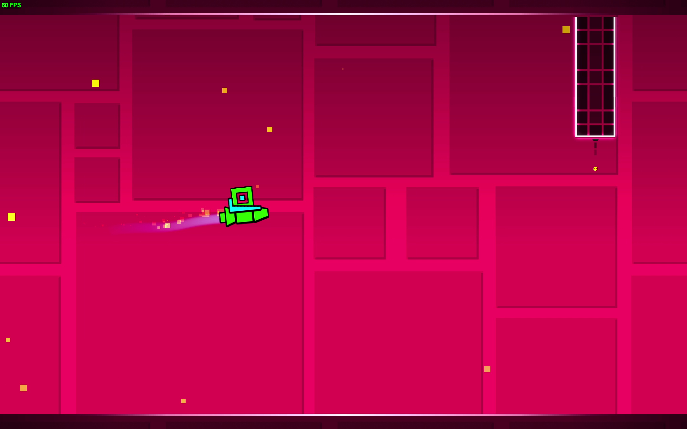

Geometry Dash is an indie game created by the developer known as Robtop in August 13, 2013. The game captivated people for its fun and unique gameplay, and quickly became popular. Multiple updates for the game would come out soon after, including 1.1 only a month later, 1.2 the month after that, and so on until one of the early big updates, 1.9. Many historic levels would come out in this time, including Nine circles (influencing a whole genre of levels), Bloodbath (The hardest level to ever be beaten up until that point). 2.0 came out a few months after featuring a new mechanic called the "move trigger." This would allow for objects to move and created a whole nother level of difficulty.

Image by Unkown
The hardest level beaten in 2.0 was Yatagarasu, a very influential level as it was part of the three RGB levels, Yatagarasu for red, Erebus for green, and Sonic Wave for blue. All of these levels were the hardest levels in the game when they were beaten. After all of this, update 2.1 came out after nearly 2 years after 2.0 was released and was the biggest update the game had yet.
Update 2.1 would span over nearly the next 7 YEARS of the game being out. This was a major shock to the community, who have gotten used to at least yearly updates, and even monthly in the old days. The early years of 2.1 were very influential towards the community, as the update added many things never seen before. People were also left wondering, when would 2.2 come out? 2.1 already took almost 2 years, and 2.2 was planned to be even larger. This soon became a meme in the community, often saying "2.2 when?" and bothering Robtop all the time about it.